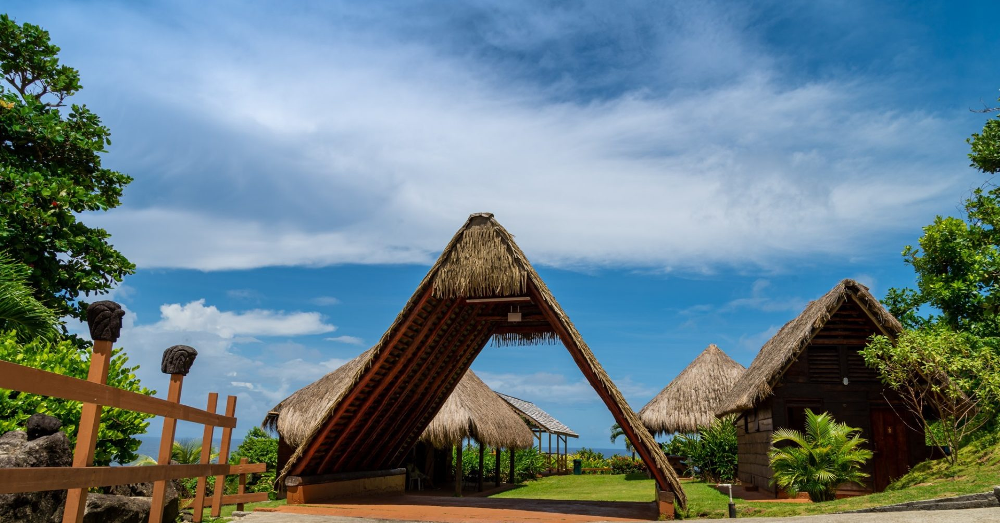

HavenReach — Dominica Initiative
Youth development, community infrastructure, and practical skills support in the Kalinago Territory of Dominica.
HavenReach exists to organize meaningful service initiatives — not shallow gestures, but sustained, respectful, locally-grounded work. We believe the people we serve are not projects. They are neighbors.
Our goal is to show up with competence, humility, and follow-through — and to build something worth coming back to.
Every decision starts with respect for the community we serve.
We build things that last beyond a single trip.
Resources go where they make a real difference.
Every dollar and every hour is stewarded carefully.
Our first flagship project brings youth development, community infrastructure, and practical skills support to the Kalinago Territory — one of the most historically significant indigenous communities in the Caribbean.

Team confirmation, scope definition, and preliminary planning.
Equipment planning, sponsor outreach, program design.
Equipment ordering, travel planning, logistics coordination.
Travel to Dominica. Deliver programs. Build relationships.
Equipping four elementary schools in the Kalinago Territory with everything needed to run sustainable soccer programs — from jerseys to goals to training cones.
Building a small volunteer base camp that will support future HavenReach service trips, community events, and ongoing programs for years to come.
Led by our Field Operations Lead — a certified firefighter and EMT — this workshop empowers community members with practical emergency knowledge and supplies.
Vision, finances, logistics, and Dominica relationships. Responsible for planning and final decision authority.
On-ground coordination, campground work, and First Aid Training. Firefighter and EMT background.
Campaign messaging, fundraiser updates, and community engagement leading up to the trip.
Photography, video, and documentation during the trip. Post-trip editing and impact content.
The Dominica Initiative is funded entirely through individual support. Whether you sponsor a player, contribute to infrastructure, or simply share our mission — every action matters.
Donate via GoFundMeEvery dollar donated is tracked, reported, and directed to the specific programs described here. We distinguish clearly between confirmed plans and future aspirations.
Questions about how funds are used are always welcome.